Episode 5: Spectacular
Episode 5 of The Weird Girls Project proved to be the most grueling episode physically. The girls were put on roller skates for hours on end. The video media, directed by Þórgnýr Thoroddsen, uses aggressive 3D composition to express the jarring vocals.
- Producer, Concept and Artistic Direction: Kitty Von-Sometime
- Photography: Shot by María Guðrún Rúnarsdóttir and Saga Sig
- Video Direction and Post Production by Þórgnýr Thoroddsen
- Editing: Atli Viðar Þórsteinsson
- Costumes: Custom made by Kolbrún at KVK
- Official Music: Hovering Hoover Skates by Ghostigital
- 7th July 2008
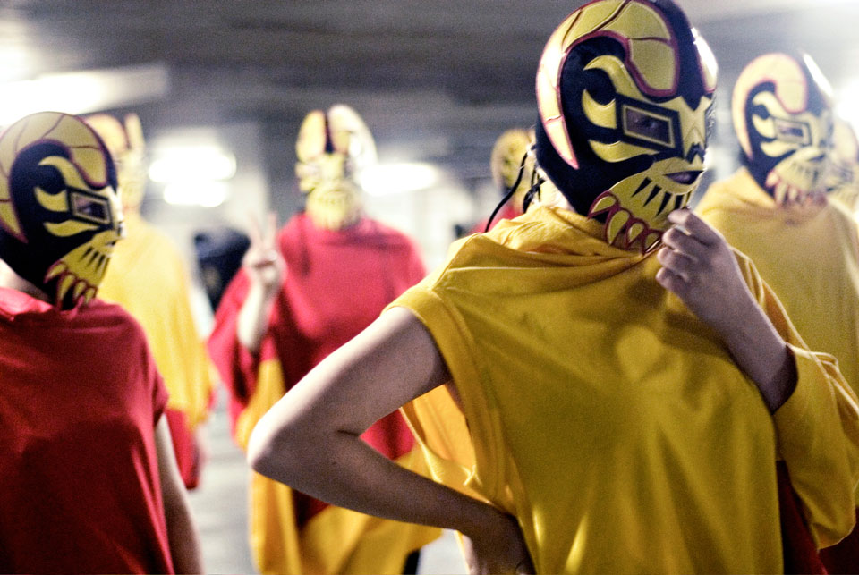
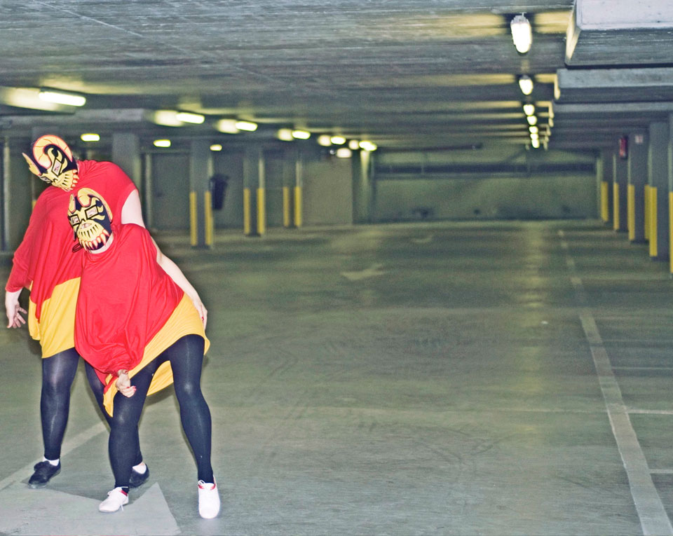
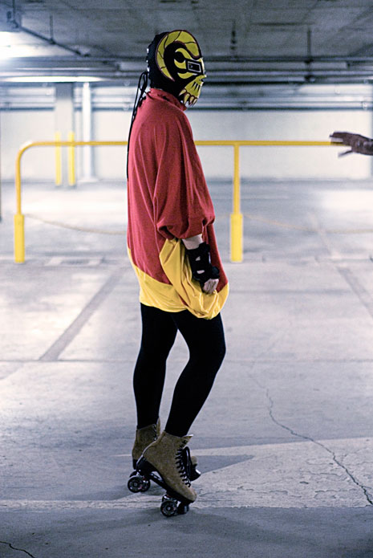
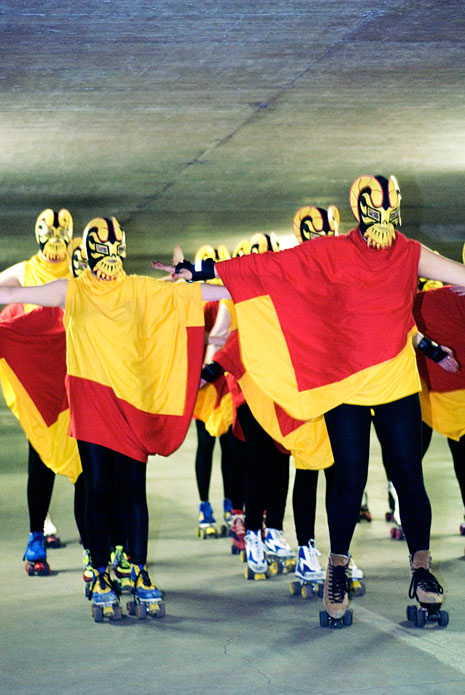
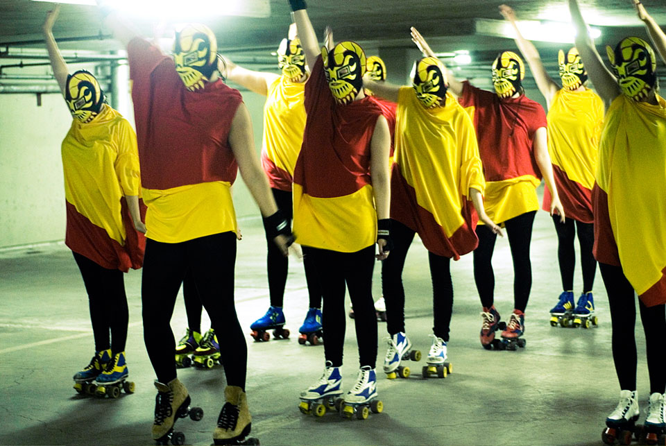
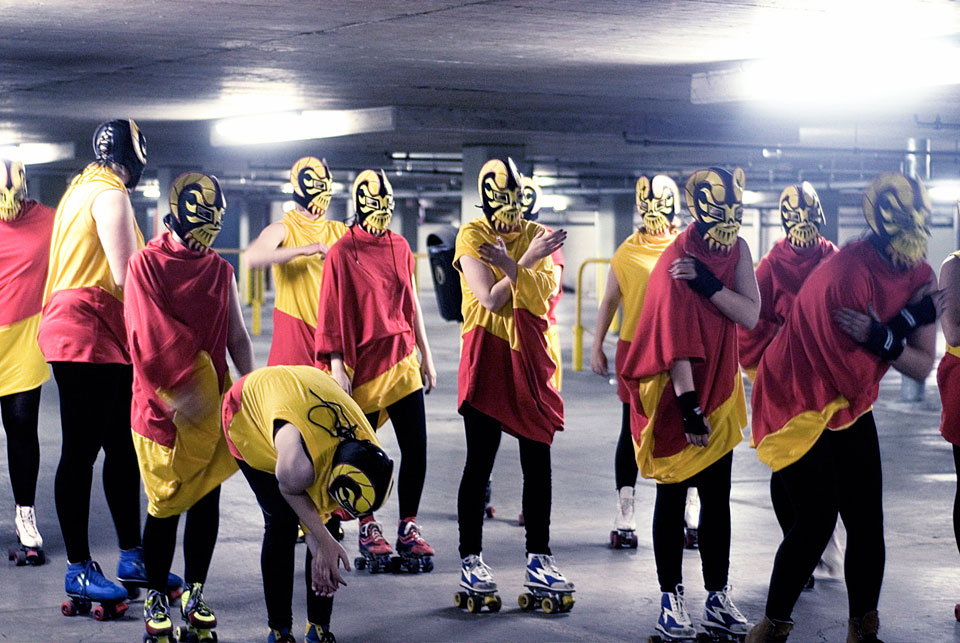
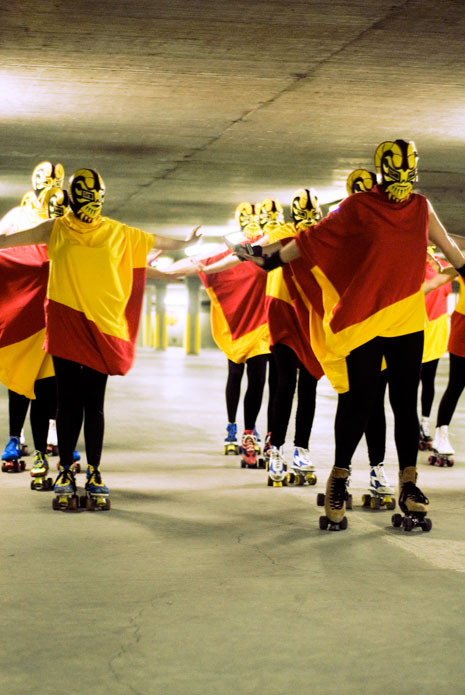
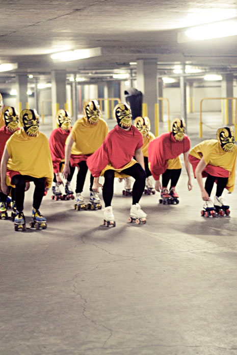
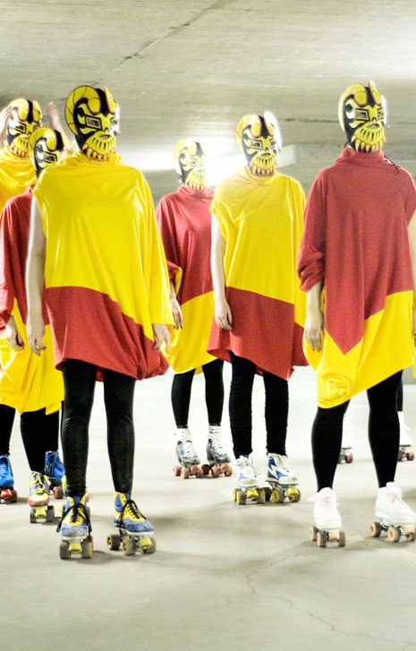
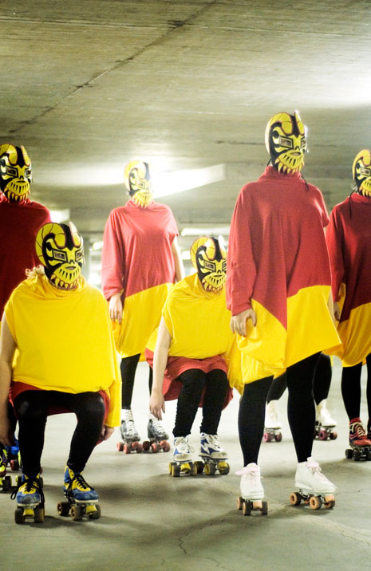
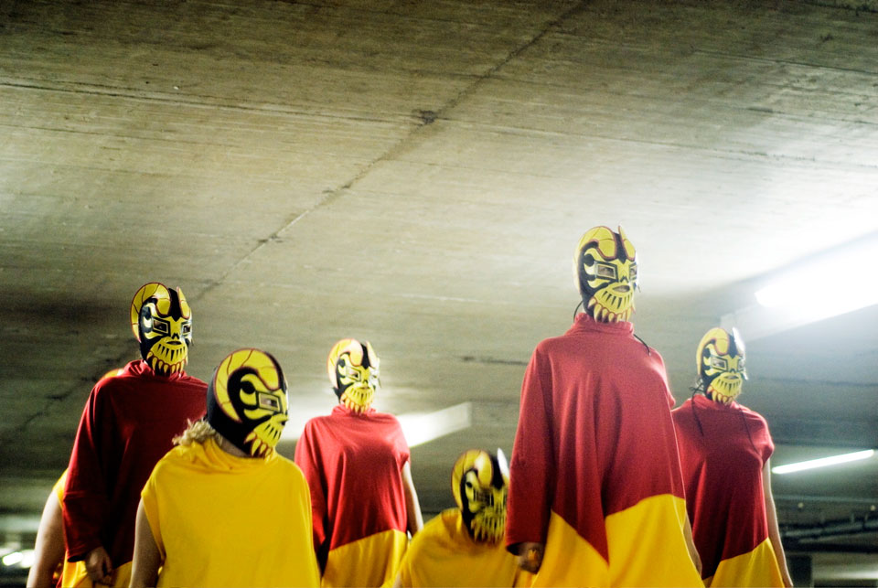
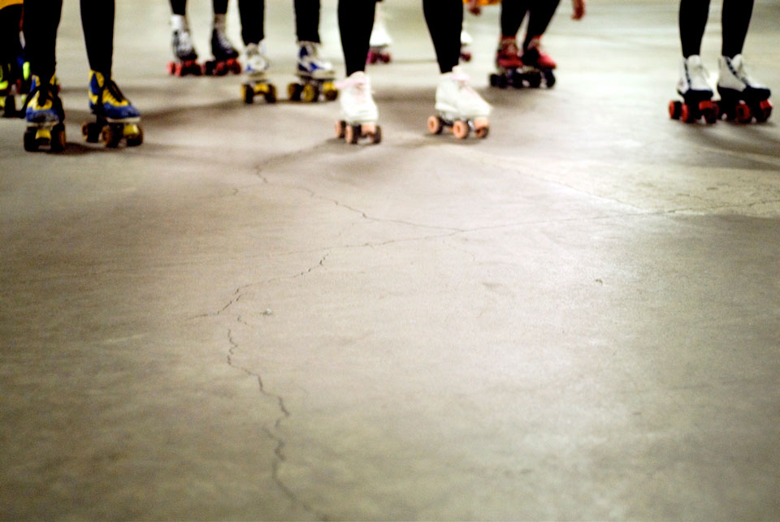
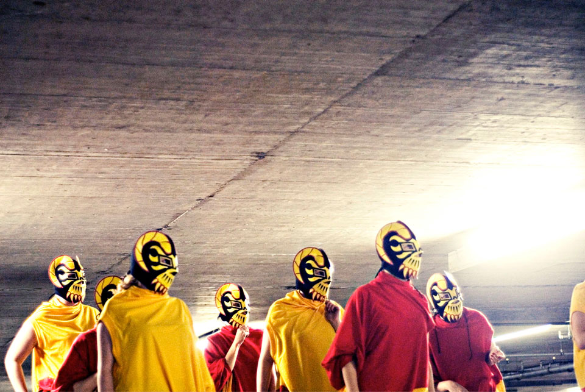